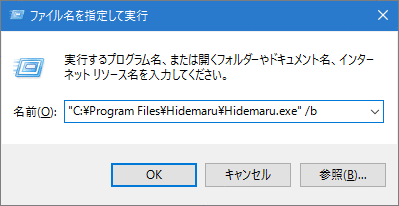
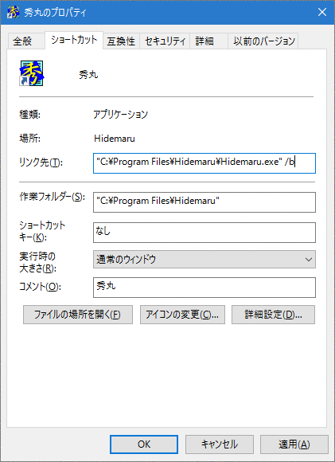

秀丸エディタに限らず、Windowsのアプリケーションの多くで、「起動オプション」を使うことができます。 これによって、そのアプリケーションをどんな状態で起動させるかや、起動してすぐに実行したい処理などを指示することができます。 起動オプションをうまく使うと、単にアプリケーションを起動するだけとはひとあじ違う使い方ができるわけで、 こんなイイものを使わない手はないでしょう。(^_^)
秀丸エディタの場合は、例えば
| /b | 秀丸エディタを閲覧モードで起動します。 |
| /j行番号,桁番号 | ファイルを開いてから，指定された行にカーソルを移動します。 |
| /xマクロ名 | 秀丸エディタ起動と同時にマクロを実行します。 |
| /fe /fj など | オープンするファイルの文字コードを指定します。 |
のような起動オプションを利用することができます。 （詳しくは秀丸エディタヘルプの 秀丸エディタ起動時のオプション に解説されていますので、そちらをご覧ください。）
この起動オプションは、「コマンドライン」で利用することができます。 コマンドラインというのは、起動したいアプリケーション名とその起動オプション・開きたいファイル名を『文字で』記述することで、 そのアプリケーションを起動することができるモノを指します（←ちょっといい加減な説明(^^;)）。
例えば、スタートメニューの「ファイル名を指定して実行(R)…」がそれに当たります。

また、Windowsでは「コマンドプロンプト」でも同様に Windowsアプリケーションを起動させることができたりします。
実は、Windowsの「ショートカット」や「アプリケーションとの関連付け」でもコマンドラインの仕組みを使っています。
例えば、ショートカットの場合、ショートカットのプロパティの「リンク先」がコマンドラインになっています。
ショートカットは、デスクトップ上に置いて使う以外にも、右クリックメニューの中の「送る」の機能を追加するために使うことができます。 「送る」の送り先は、ユーザーフォルダ内のフォルダ(C:\Users\ユーザー名\AppData\Roaming\Microsoft\Windows\SendTo)フォルダの中に置かれたショートカットなので、 そこにショートカットを追加すれば、「送る」に追加されることになります。
ということは、ショートカットの「リンク先」のところに起動オプションを書き加えておいて、 そこにファイルをドラッグ＆ドロップすれば（または「送る」）、いつもと一味違う秀丸エディタが立ち上がって便利便利、 ということになるはずです。
■１．ショートカットへの「ドラッグ＆ドロップ」の場合ここでは例題として、デスクトップ上に「秀丸エディタを閲覧モードで開く」ショートカットを作成して、 そこにファイルをドラッグ＆ドロップすると、そのファイルが閲覧モードで開くようにしてみましょう。
試しに、秀丸エディタのショートカットを作成して、そのプロパティの「リンク先」の最後に
...\Hidemaru.exe /bというふうに 半角スペースと“/b” を追加してみてください。

できたショートカットをダブルクリックすると、新規作成の秀丸エディタが閲覧モードで起動します。 何にもない画面を閲覧モードで開いてもちっとも嬉しくありませんが(^^;)、とりあえずちゃんと起動オプションは効いているようです。
今回は“/b”を指定し、閲覧モードで開くようにしましたが、grepを起動するようにしたり、「デスクトップ復元」を行うようにすることも可能です。
残念ながら、Windows Vista以降、“開く”アプリケーションの変更はできますが、 右クリックメニューに、ユーザー独自の「閲覧モードで開く」等の追加が、簡単にはできなくなっています。 (レジストリエディタで直接レジストリを編集すれば可能です。)
起動オプションを指定したい場合には、ショートカットで指定するか、ファイルの種類によって切り換えることはできませんが、 「送る」を使うのが簡単です。
コマンドラインは、他のアプリケーションを起動したり、他のアプリケーションから起動されたり等、 色々使われているので、簡単に注意点を示します。
コマンドラインで、各パラメータ(/b 等)の区切りには、半角スペースが使用されます。 また、Windowsではファイルやフォルダの名前に半角スペースが使用可能です。 その為、半角スペースを含む名前を指定する場合には、注意が必要です。
例)秀丸エディタの標準的なインストール先
C:\Program Files\Hidemaru\Hidemaru.exeこのC:\Program Files\Hidemaru\Hidemaru.exe を単純に半角スペースで分割すると、
「C:\Program」と「Files\Hidemaru\Hidemaru.exe」になり、hidemaru.exe を起動する事が出来ません。(C:\Program が見つかりませんと言われる。)
その為、半角スペースを含む場合には、全体を「“」(ダブルクオート)で囲みます。
"C:\Program Files\Hidemaru\Hidemaru.exe"秀丸エディタのショートカットで、リンク先のパスが「“」(ダブルクオート)で囲まれているのは、このためです。
秀丸エディタでファイルを指定して開く場合も同じで、対象のファイルパスに半角スペースを含む場合は、全体を「“」(ダブルクオート)で囲みます。
例)秀丸エディタで同じフォルダにあるファイルを開く場合
"C:\Program Files\Hidemaru\Hidemaru.exe" "C:\Program Files\Hidemaru\hidemaru.txt"秀丸エディタは柔軟にファイル判定するらしく、ファイル名を「“」で囲まなくても、ファイルを開いてくれますが、 なるべく囲むようにしてください。
//この状態でも問題なくファイルを開いてくれる。
"C:\Program Files\Hidemaru\Hidemaru.exe" C:\Program Files\Hidemaru\hidemaru.txt上記のように、柔軟に判定してくれるのありがたいのですが、以下のようにファイルを2個開きたい場合は、 “空白を含むパス”と優先して認識するようで、ファイルが開けません。
//カレントフォルダにファイルが2個あって開きたい場合
"C:\Program Files\Hidemaru\Hidemaru.exe" file1.txt file2.txt
実行すると、"file1.txt file2.txt" という新規ファイルを開く。ファイルを複数開くには、以下の方法があります。
方法1 ファイル名を「“」(ダブルクォートで囲む)
"C:\Program Files\Hidemaru\Hidemaru.exe" "file1.txt" "file2.txt"方法2 ファイル名をフルパスで指定する。(ダブルクォートが無くてもファイルの区切りが認識可能)
"C:\Program Files\Hidemaru\Hidemaru.exe" C:\TEMP\file1.txt C:\TEMP\file2.txtオプションを指定する場合、記述する場所も重要になります。
// "C:\Program Files\Hidemaru\hidemaru.txt" を 開き、 そのファイルに test.mac を実行したい
"C:\Program Files\Hidemaru\Hidemaru.exe" "C:\Program Files\Hidemaru\hidemaru.txt" /x test.macこの記述だと、“C:\Program Files\Hidemaru\hidemaru.txt” は開きますが、test.mac は “無題”の秀丸エディタが開き、 そこで実行されます。
(“/x test.mac” の後に無題の秀丸エディタを指定している状態)
// "C:\Program Files\Hidemaru\hidemaru.txt" を 開き、 そのファイルに test.mac を実行したい
"C:\Program Files\Hidemaru\Hidemaru.exe" /x test.mac "C:\Program Files\Hidemaru\hidemaru.txt"マクロを実行する場合、複数のファイルを指定しても、最初のファイルしか開かないようです。
// マクロの実行と、ファイルを2個指定した場合
"C:\Program Files\Hidemaru\Hidemaru.exe" /x test.mac "file1.txt" "file2.txt"
file1.txt を開き、 test.mac を実行するが、file2.txt は開かない。コマンドプロンプトを使うと、複数のファイルにマクロを実行す事も可能です。 (マクロはチョットした注意点があります。)
以下は、ワイルドカードで指定したファイルに対し、マクロを実行するバッチファイルです。
@echo off
if not "%1" == "" goto MAIN
echo 検索するファイルのワイルドカードを指定してください。
goto :EOF
:MAIN
for %%a in (%1) do "C:\Program Files\Hidemaru\Hidemaru.exe" /x 実行するマクロ.mac "%%a"上記、内容をバッチファイルとして保存し、ワイルドカードを指定して実行すると、 ワイルドカードにマッチしたファイルに対しマクロを実行します。
ただし、開いた秀丸エディタを閉じないと、次のファイルに進みません。 自動処理で使用する場合には、マクロ内でファイルを閉じる操作が必要になります。